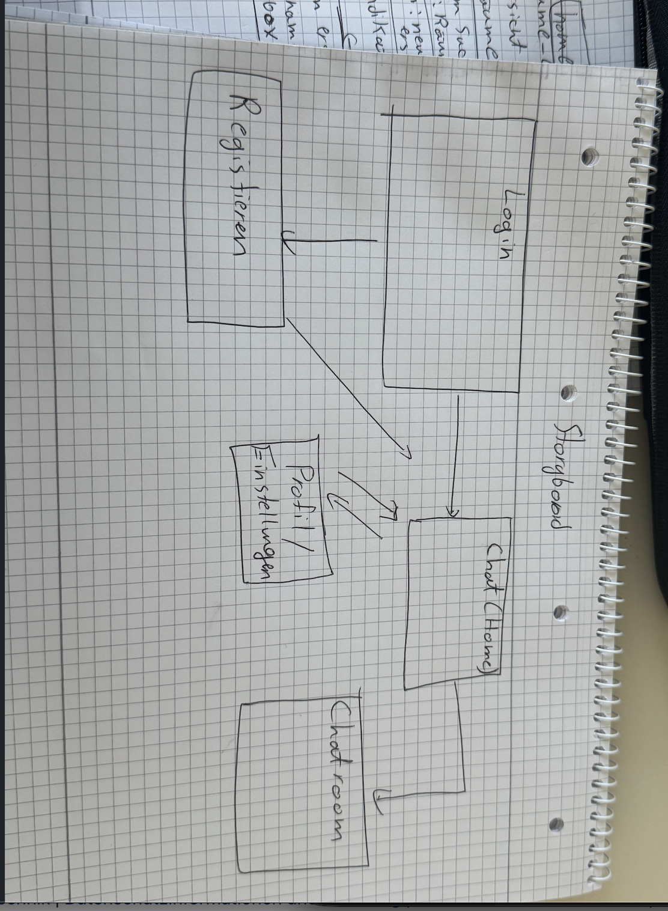
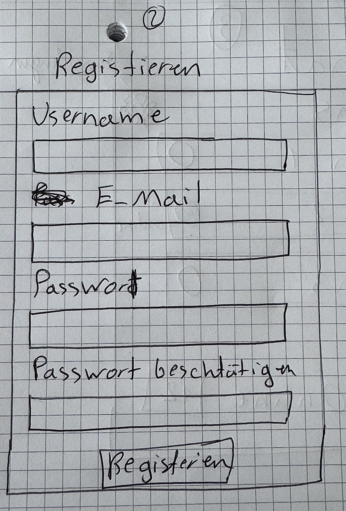

Aufgabe 2.4 – Chat/Forum Anwendung
1. Beschreibung der Grundidee
- Echtzeit-Chat-System mit öffentlichen Räumen
- Benutzer können Nachrichten senden, Dateien teilen und Emojis nutzen
- Online-Status und “tippt...” Anzeige in Echtzeit
3. Bilder (Screens)
Storyboard:

Login-Screen:

Registrieren-Screen:

Chatroom:

Chat-Screen:

Profil & Einstellungen:

4. Erläuterungen zu den einzelnen Screens
- Login: Benutzer melden sich mit E-Mail und Passwort an.
- Registrieren: Neue Nutzer legen ein Konto an.
- Chatroom: Übersicht über öffentliche Räume.
- Chat: Echtzeitnachrichten, Emojis, Datei-Upload, Online-Status.
- Profil & Einstellungen: Nutzer kann Name, Status, Bild oder andere Einstellungen ändern .